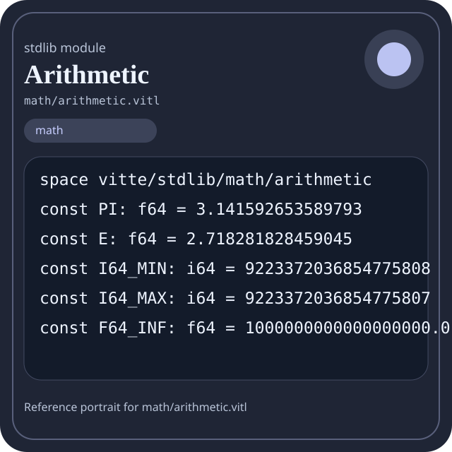

Stdlib module math/arithmetic.vitl
This page is a wiki-style reference for one concrete stdlib file. It explains what the file owns, where it fits in the family, and how to decide whether this is the right surface to depend on.

math/arithmetic.vitl.Family: math
Kind: public stdlib surface
Page style: this reference follows the same “encyclopedic card + portrait + usage contract” logic as the keyword pages, but for stdlib modules.
Summary
- Overview
- Purpose
- Taxonomy
- Implementation profile
- Top-level API inventory
- Position in family
- Declaration map
- Representative signatures
- How to use this module
- User example
- Keyword coverage
- Source shape
- Source landmarks
- Source organization
- Complete API catalog
- Integration boundaries
- Composition guidance
- Relationship table
- Neighbor modules
Overview
| Field | Value |
|---|---|
| Path | math/arithmetic.vitl |
| Family | math |
| Kind | public stdlib surface |
| Line count | 690 |
| Declared procedures | 72 |
| Declared forms/picks | 2 |
`math/arithmetic.vitl` is a public stdlib surface inside the `math` family. It should be read as one focused slice of the broader family responsibility: Arithmetic, algebra, comparison, calculus, geometry, modular arithmetic, number theory, probability, statistics, matrix, and vector helpers.
Purpose
This file should be chosen because of responsibility, not because its name “sounds close enough”. Inside the math family, it carries one focused part of the contract and keeps that responsibility separate from neighboring concerns.
- A scoring engine can compute aggregates in `math` while keeping I/O and transport elsewhere.
- A statistics or matrix chapter should explain the workflow around the computation, not just a single formula.
Taxonomy
Think of this page as a generated encyclopedia entry rather than a hand-written tutorial. The goal is to show what kind of module this is, how dense it is, and what reading strategy makes sense before depending on it.
- Large algorithm surface: this file exposes many procedures and likely acts as a domain toolkit rather than a single thin wrapper.
- Owns domain vocabulary: the module declares data shapes in addition to executable helpers, so its types are part of the contract.
- Has tuning constants: part of the module behavior is controlled by named constants that document default precision, limits, or policy.
- Minimal top-level dependencies: the module reads as mostly self-contained from its opening declarations.
- Explicit export surface: the file ends with visible export declarations instead of relying only on implicit namespace discovery.
Implementation profile
This profile is inferred directly from the source text. It does not replace reading the file, but it tells you quickly whether the module is mostly declarative, loop-heavy, branch-heavy, or organized around many small exits.
| Signal | Count | What it suggests |
|---|---|---|
if | 58 | Branching density and local decision-making. |
while | 12 | Loop-heavy or iterative implementation style. |
for | 0 | Collection-style traversal at source level. |
match | 1 | Variant-driven branching or grammar-style decoding. |
let | 87 | Local state and intermediate value density. |
give | 127 | Number of explicit exit points and result shaping. |
Top-level API inventory
| Surface | Items |
|---|---|
| Procedures | abs_i64, abs_f64, add_i64, sub_i64, mul_i64, div_i64, mod_i64, add_f64, sub_f64, mul_f64, div_f64, max_i64 |
| Forms | I128 |
| Picks | SafeResult |
| Constants | PI, E, I64_MIN, I64_MAX, F64_INF, F64_NAN, RAND_A, RAND_C, RAND_M |
| Exports | * |
Imported surfaces
This file does not advertise a top-level `use` surface in its opening declarations. That often means it is either self-contained or an aggregation layer.
Position in family
This file is module 3 of 21 in the math family when ordered by path. By procedure count it ranks 4, and by line count it ranks 4. Those ranks are useful as rough signals of breadth, not as quality judgments.
Declaration map
The declaration map turns raw source into a scan-friendly catalog. It is useful when the file is large enough that a reader wants to orient by kinds of surfaces first.
| Line | Name | Kind | Role |
|---|---|---|---|
| 1 | vitte/stdlib/math/arithmetic | space | Declares the namespace that anchors this file in the stdlib tree. |
| 7 | PI | const | Defines a named constant reused across the module. |
| 8 | E | const | Defines a named constant reused across the module. |
| 10 | I64_MIN | const | Defines a bound or precision constant that shapes runtime behavior. |
| 11 | I64_MAX | const | Defines a bound or precision constant that shapes runtime behavior. |
| 13 | F64_INF | const | Defines a named constant reused across the module. |
| 14 | F64_NAN | const | Defines a named constant reused across the module. |
| 16 | RAND_A | const | Defines a named constant reused across the module. |
| 17 | RAND_C | const | Defines a named constant reused across the module. |
| 18 | RAND_M | const | Defines a named constant reused across the module. |
| 20 | SafeResult | pick | Introduces a tagged variant type used to model distinct outcomes. |
| 25 | I128 | form | Introduces a structured data shape that other procedures can exchange. |
| 29 | abs_i64 | proc | Represents one top-level surface in the file contract and should be read as part of the module boundary. |
| 37 | abs_f64 | proc | Represents one top-level surface in the file contract and should be read as part of the module boundary. |
| 45 | add_i64 | proc | Represents one top-level surface in the file contract and should be read as part of the module boundary. |
| 49 | sub_i64 | proc | Represents one top-level surface in the file contract and should be read as part of the module boundary. |
| 53 | mul_i64 | proc | Represents one top-level surface in the file contract and should be read as part of the module boundary. |
| 57 | div_i64 | proc | Represents one top-level surface in the file contract and should be read as part of the module boundary. |
| 65 | mod_i64 | proc | Represents one top-level surface in the file contract and should be read as part of the module boundary. |
| 73 | add_f64 | proc | Represents one top-level surface in the file contract and should be read as part of the module boundary. |
| 77 | sub_f64 | proc | Represents one top-level surface in the file contract and should be read as part of the module boundary. |
| 81 | mul_f64 | proc | Represents one top-level surface in the file contract and should be read as part of the module boundary. |
| 85 | div_f64 | proc | Represents one top-level surface in the file contract and should be read as part of the module boundary. |
| 93 | max_i64 | proc | Represents one top-level surface in the file contract and should be read as part of the module boundary. |
| 101 | min_i64 | proc | Represents one top-level surface in the file contract and should be read as part of the module boundary. |
| 109 | max_f64 | proc | Represents one top-level surface in the file contract and should be read as part of the module boundary. |
| 117 | min_f64 | proc | Represents one top-level surface in the file contract and should be read as part of the module boundary. |
| 125 | pow_i64 | proc | Represents one top-level surface in the file contract and should be read as part of the module boundary. |
| 145 | pow_f64 | proc | Represents one top-level surface in the file contract and should be read as part of the module boundary. |
| 168 | fact | proc | Represents one top-level surface in the file contract and should be read as part of the module boundary. |
| 182 | gcd | proc | Represents one top-level surface in the file contract and should be read as part of the module boundary. |
| 195 | lcm | proc | Represents one top-level surface in the file contract and should be read as part of the module boundary. |
| 206 | is_prime | proc | Represents one top-level surface in the file contract and should be read as part of the module boundary. |
| 230 | fib | proc | Represents one top-level surface in the file contract and should be read as part of the module boundary. |
| 255 | clamp_i64 | proc | Represents one top-level surface in the file contract and should be read as part of the module boundary. |
| 265 | lerp | proc | Represents one top-level surface in the file contract and should be read as part of the module boundary. |
| 270 | safe_add | proc | Represents one top-level surface in the file contract and should be read as part of the module boundary. |
| 281 | safe_mul | proc | Represents one top-level surface in the file contract and should be read as part of the module boundary. |
| 310 | and_i64 | proc | Represents one top-level surface in the file contract and should be read as part of the module boundary. |
| 314 | or_i64 | proc | Represents one top-level surface in the file contract and should be read as part of the module boundary. |
| 318 | xor_i64 | proc | Represents one top-level surface in the file contract and should be read as part of the module boundary. |
| 322 | shl | proc | Represents one top-level surface in the file contract and should be read as part of the module boundary. |
| 326 | shr | proc | Represents one top-level surface in the file contract and should be read as part of the module boundary. |
| 330 | sign_i64 | proc | Implements a security-sensitive transformation in the crypto boundary. |
| 340 | is_even | proc | Represents one top-level surface in the file contract and should be read as part of the module boundary. |
| 344 | is_odd | proc | Represents one top-level surface in the file contract and should be read as part of the module boundary. |
| 348 | popcount | proc | Represents one top-level surface in the file contract and should be read as part of the module boundary. |
| 360 | leading_zeros | proc | Represents one top-level surface in the file contract and should be read as part of the module boundary. |
| 379 | trailing_zeros | proc | Represents one top-level surface in the file contract and should be read as part of the module boundary. |
| 397 | rotl | proc | Represents one top-level surface in the file contract and should be read as part of the module boundary. |
| 408 | rotr | proc | Represents one top-level surface in the file contract and should be read as part of the module boundary. |
| 419 | saturating_add | proc | Represents one top-level surface in the file contract and should be read as part of the module boundary. |
| 434 | saturating_sub | proc | Represents one top-level surface in the file contract and should be read as part of the module boundary. |
| 439 | div_floor | proc | Represents one top-level surface in the file contract and should be read as part of the module boundary. |
| 455 | div_ceil | proc | Represents one top-level surface in the file contract and should be read as part of the module boundary. |
| 471 | floor_f64 | proc | Represents one top-level surface in the file contract and should be read as part of the module boundary. |
| 479 | ceil_f64 | proc | Represents one top-level surface in the file contract and should be read as part of the module boundary. |
| 487 | round_f64 | proc | Represents one top-level surface in the file contract and should be read as part of the module boundary. |
| 496 | poly_eval | proc | Represents one top-level surface in the file contract and should be read as part of the module boundary. |
| 506 | is_nan | proc | Represents one top-level surface in the file contract and should be read as part of the module boundary. |
| 510 | is_inf | proc | Represents one top-level surface in the file contract and should be read as part of the module boundary. |
| 514 | copysign | proc | Represents one top-level surface in the file contract and should be read as part of the module boundary. |
| 522 | exp_f64 | proc | Represents one top-level surface in the file contract and should be read as part of the module boundary. |
| 534 | log_f64 | proc | Represents one top-level surface in the file contract and should be read as part of the module boundary. |
| 541 | sqrt_f64 | proc | Represents one top-level surface in the file contract and should be read as part of the module boundary. |
| 556 | sin_f64 | proc | Represents one top-level surface in the file contract and should be read as part of the module boundary. |
| 568 | cos_f64 | proc | Represents one top-level surface in the file contract and should be read as part of the module boundary. |
| 579 | log10_f64 | proc | Represents one top-level surface in the file contract and should be read as part of the module boundary. |
| 586 | fabs | proc | Represents one top-level surface in the file contract and should be read as part of the module boundary. |
| 590 | fmod | proc | Represents one top-level surface in the file contract and should be read as part of the module boundary. |
| 600 | ceil | proc | Represents one top-level surface in the file contract and should be read as part of the module boundary. |
| 604 | floor | proc | Represents one top-level surface in the file contract and should be read as part of the module boundary. |
| 608 | rand_next | proc | Represents one top-level surface in the file contract and should be read as part of the module boundary. |
| 614 | rand_f64 | proc | Represents one top-level surface in the file contract and should be read as part of the module boundary. |
| 618 | add_i128 | proc | Represents one top-level surface in the file contract and should be read as part of the module boundary. |
| 622 | mul_i128 | proc | Represents one top-level surface in the file contract and should be read as part of the module boundary. |
| 626 | __add_overflow | proc | Represents one top-level surface in the file contract and should be read as part of the module boundary. |
| 630 | __mul_overflow | proc | Represents one top-level surface in the file contract and should be read as part of the module boundary. |
| 634 | __popcnt | proc | Represents one top-level surface in the file contract and should be read as part of the module boundary. |
| 638 | __bsf | proc | Represents one top-level surface in the file contract and should be read as part of the module boundary. |
| 642 | __bsr | proc | Represents one top-level surface in the file contract and should be read as part of the module boundary. |
| 649 | arithmetic_version | proc | Represents one top-level surface in the file contract and should be read as part of the module boundary. |
| 653 | arithmetic_ready | proc | Represents one top-level surface in the file contract and should be read as part of the module boundary. |
| 657 | arithmetic_selftest | proc | Represents one top-level surface in the file contract and should be read as part of the module boundary. |
The table is exhaustive for top-level declarations of the selected kinds. This file declares 84 matching surfaces.
Representative signatures
These signatures are shown in source order so the page keeps the feel of a reference manual, not just a keyword cloud.
const PI: f64 = 3.141592653589793(line 7)const E: f64 = 2.718281828459045(line 8)const I64_MIN: i64 = 9223372036854775808(line 10)const I64_MAX: i64 = 9223372036854775807(line 11)const F64_INF: f64 = 1000000000000000000.0(line 13)const F64_NAN: f64 = 0.0(line 14)const RAND_A: i64 = 1664525(line 16)const RAND_C: i64 = 1013904223(line 17)const RAND_M: i64 = 2147483647(line 18)pick SafeResult {(line 20)form I128 {(line 25)proc abs_i64(value: i64) -> i64 {(line 29)proc abs_f64(value: f64) -> f64 {(line 37)proc add_i64(a: i64, b: i64) -> i64 {(line 45)proc sub_i64(a: i64, b: i64) -> i64 {(line 49)proc mul_i64(a: i64, b: i64) -> i64 {(line 53)proc div_i64(a: i64, b: i64) -> i64 {(line 57)proc mod_i64(a: i64, b: i64) -> i64 {(line 65)
The list is intentionally capped here; the source file declares 83 matching signatures in total.
How to use this module
Start by reading the file as an ownership boundary. Ask three questions: what enters this module, what stable types or procedures it exports, and what adjacent module should stay outside of it.
- Read
spaceand top-level imports first so the ownership boundary ofmath/arithmetic.vitlis explicit. - Scan constants before procedures; they often encode precision, limits, or policy assumptions that explain later behavior.
- Read declared forms and picks before algorithms so the data vocabulary is stable in your head.
- Traverse procedures in source order; the early helpers usually explain the naming and numeric conventions used later.
- Use the source landmarks section below as a table of contents when the file is large.
User example
This example is generated from the actual stdlib module surface. Its job is not to be the smallest snippet possible; its job is to show a realistic consumer-shaped file that exercises the module and mirrors the language keywords the module itself relies on.
space demo/math_arithmetic
const SAMPLE_LABEL: string = "demo"
form UserReport {
label: string,
ready: bool
}
pick UserOutcome {
case Ready(message: string)
case Empty(reason: string)
}
proc run_example() -> UserOutcome {
let result = abs_i64(1)
let ready: bool = is_prime(1)
let failed: bool = false
let stable: bool = ready and true
let fallback: bool = ready or false
let idx: int = 0
while idx < 1 {
set idx = idx + 1
}
if ready {
give UserOutcome.Empty("module not ready")
} else {
let state: UserOutcome = UserOutcome.Ready("ok")
match state {
case UserOutcome.Ready(message) {
give UserOutcome.Ready(message)
}
case UserOutcome.Empty(reason) {
give UserOutcome.Empty(reason)
}
}
}
let copies: f64 = 1 as f64
}
export run_exampleKeyword coverage
This table makes the “all keywords of the module” requirement auditable. It compares the detected Vitte keywords in the source file with the generated consumer example above.
| Keyword | Present in module source | Used in generated user example |
|---|---|---|
space | yes | yes |
const | yes | yes |
form | yes | yes |
pick | yes | yes |
case | yes | yes |
proc | yes | yes |
let | yes | yes |
set | yes | yes |
if | yes | yes |
else | yes | yes |
while | yes | yes |
match | yes | yes |
give | yes | yes |
export | yes | yes |
true | yes | yes |
false | yes | yes |
and | yes | yes |
or | yes | yes |
as | yes | yes |
The generated snippet exercises every detected Vitte keyword used by this module.
Source shape
space vitte/stdlib/math/arithmetic
const PI: f64 = 3.141592653589793
const E: f64 = 2.718281828459045
const I64_MIN: i64 = 9223372036854775808
const I64_MAX: i64 = 9223372036854775807
const F64_INF: f64 = 1000000000000000000.0
const F64_NAN: f64 = 0.0
const RAND_A: i64 = 1664525
const RAND_C: i64 = 1013904223
const RAND_M: i64 = 2147483647The excerpt is not meant to replace the file. It exists to make the module recognizable at first glance, the same way a Wikipedia infobox helps the reader orient before reading the whole article.
Source landmarks
Large files are easier to retain when they have visible landmarks. When the source contains explicit section banners, they are surfaced here; otherwise the first major declarations are used as anchors.
- Arithmetic — scalar arithmetic and numeric helpers
Source organization
When a file carries its own internal chaptering, those chapters usually reveal the intended reading order better than a flat symbol list. This section reconstructs that organization from the source itself.
Opening declarations
Top-level items: 1. Procedures: 0. Data surfaces: 0. Constants: 0.
First visible names: vitte/stdlib/math/arithmetic
Arithmetic — scalar arithmetic and numeric helpers
Top-level items: 84. Procedures: 72. Data surfaces: 2. Constants: 9.
First visible names: PI, E, I64_MIN, I64_MAX, F64_INF, F64_NAN, RAND_A, RAND_C, RAND_M, SafeResult
Complete API catalog
This catalog is the exhaustive file-level index for the module. It is intentionally closer to a generated encyclopedia appendix than to a tutorial summary.
Constants
| Line | Name | Signature | Role |
|---|---|---|---|
| 7 | PI | const PI: f64 = 3.141592653589793 | Defines a named constant reused across the module. |
| 8 | E | const E: f64 = 2.718281828459045 | Defines a named constant reused across the module. |
| 10 | I64_MIN | const I64_MIN: i64 = 9223372036854775808 | Defines a bound or precision constant that shapes runtime behavior. |
| 11 | I64_MAX | const I64_MAX: i64 = 9223372036854775807 | Defines a bound or precision constant that shapes runtime behavior. |
| 13 | F64_INF | const F64_INF: f64 = 1000000000000000000.0 | Defines a named constant reused across the module. |
| 14 | F64_NAN | const F64_NAN: f64 = 0.0 | Defines a named constant reused across the module. |
| 16 | RAND_A | const RAND_A: i64 = 1664525 | Defines a named constant reused across the module. |
| 17 | RAND_C | const RAND_C: i64 = 1013904223 | Defines a named constant reused across the module. |
| 18 | RAND_M | const RAND_M: i64 = 2147483647 | Defines a named constant reused across the module. |
Data surfaces
| Line | Name | Signature | Role |
|---|---|---|---|
| 20 | SafeResult | pick SafeResult { | Introduces a tagged variant type used to model distinct outcomes. |
| 25 | I128 | form I128 { | Introduces a structured data shape that other procedures can exchange. |
Procedures
| Line | Name | Signature | Role |
|---|---|---|---|
| 29 | abs_i64 | proc abs_i64(value: i64) -> i64 { | Represents one top-level surface in the file contract and should be read as part of the module boundary. |
| 37 | abs_f64 | proc abs_f64(value: f64) -> f64 { | Represents one top-level surface in the file contract and should be read as part of the module boundary. |
| 45 | add_i64 | proc add_i64(a: i64, b: i64) -> i64 { | Represents one top-level surface in the file contract and should be read as part of the module boundary. |
| 49 | sub_i64 | proc sub_i64(a: i64, b: i64) -> i64 { | Represents one top-level surface in the file contract and should be read as part of the module boundary. |
| 53 | mul_i64 | proc mul_i64(a: i64, b: i64) -> i64 { | Represents one top-level surface in the file contract and should be read as part of the module boundary. |
| 57 | div_i64 | proc div_i64(a: i64, b: i64) -> i64 { | Represents one top-level surface in the file contract and should be read as part of the module boundary. |
| 65 | mod_i64 | proc mod_i64(a: i64, b: i64) -> i64 { | Represents one top-level surface in the file contract and should be read as part of the module boundary. |
| 73 | add_f64 | proc add_f64(a: f64, b: f64) -> f64 { | Represents one top-level surface in the file contract and should be read as part of the module boundary. |
| 77 | sub_f64 | proc sub_f64(a: f64, b: f64) -> f64 { | Represents one top-level surface in the file contract and should be read as part of the module boundary. |
| 81 | mul_f64 | proc mul_f64(a: f64, b: f64) -> f64 { | Represents one top-level surface in the file contract and should be read as part of the module boundary. |
| 85 | div_f64 | proc div_f64(a: f64, b: f64) -> f64 { | Represents one top-level surface in the file contract and should be read as part of the module boundary. |
| 93 | max_i64 | proc max_i64(a: i64, b: i64) -> i64 { | Represents one top-level surface in the file contract and should be read as part of the module boundary. |
| 101 | min_i64 | proc min_i64(a: i64, b: i64) -> i64 { | Represents one top-level surface in the file contract and should be read as part of the module boundary. |
| 109 | max_f64 | proc max_f64(a: f64, b: f64) -> f64 { | Represents one top-level surface in the file contract and should be read as part of the module boundary. |
| 117 | min_f64 | proc min_f64(a: f64, b: f64) -> f64 { | Represents one top-level surface in the file contract and should be read as part of the module boundary. |
| 125 | pow_i64 | proc pow_i64(base: i64, exponent: i64) -> i64 { | Represents one top-level surface in the file contract and should be read as part of the module boundary. |
| 145 | pow_f64 | proc pow_f64(base: f64, exponent: i64) -> f64 { | Represents one top-level surface in the file contract and should be read as part of the module boundary. |
| 168 | fact | proc fact(value: i64) -> i64 { | Represents one top-level surface in the file contract and should be read as part of the module boundary. |
| 182 | gcd | proc gcd(a: i64, b: i64) -> i64 { | Represents one top-level surface in the file contract and should be read as part of the module boundary. |
| 195 | lcm | proc lcm(a: i64, b: i64) -> i64 { | Represents one top-level surface in the file contract and should be read as part of the module boundary. |
| 206 | is_prime | proc is_prime(value: i64) -> bool { | Represents one top-level surface in the file contract and should be read as part of the module boundary. |
| 230 | fib | proc fib(index: i64) -> i64 { | Represents one top-level surface in the file contract and should be read as part of the module boundary. |
| 255 | clamp_i64 | proc clamp_i64(value: i64, low: i64, high: i64) -> i64 { | Represents one top-level surface in the file contract and should be read as part of the module boundary. |
| 265 | lerp | proc lerp(a: f64, b: f64, t: f64) -> f64 { | Represents one top-level surface in the file contract and should be read as part of the module boundary. |
| 270 | safe_add | proc safe_add(a: i64, b: i64) -> SafeResult { | Represents one top-level surface in the file contract and should be read as part of the module boundary. |
| 281 | safe_mul | proc safe_mul(a: i64, b: i64) -> SafeResult { | Represents one top-level surface in the file contract and should be read as part of the module boundary. |
| 310 | and_i64 | proc and_i64(a: i64, b: i64) -> i64 { | Represents one top-level surface in the file contract and should be read as part of the module boundary. |
| 314 | or_i64 | proc or_i64(a: i64, b: i64) -> i64 { | Represents one top-level surface in the file contract and should be read as part of the module boundary. |
| 318 | xor_i64 | proc xor_i64(a: i64, b: i64) -> i64 { | Represents one top-level surface in the file contract and should be read as part of the module boundary. |
| 322 | shl | proc shl(value: i64, bits: i64) -> i64 { | Represents one top-level surface in the file contract and should be read as part of the module boundary. |
| 326 | shr | proc shr(value: i64, bits: i64) -> i64 { | Represents one top-level surface in the file contract and should be read as part of the module boundary. |
| 330 | sign_i64 | proc sign_i64(value: i64) -> i64 { | Implements a security-sensitive transformation in the crypto boundary. |
| 340 | is_even | proc is_even(value: i64) -> bool { | Represents one top-level surface in the file contract and should be read as part of the module boundary. |
| 344 | is_odd | proc is_odd(value: i64) -> bool { | Represents one top-level surface in the file contract and should be read as part of the module boundary. |
| 348 | popcount | proc popcount(value: i64) -> i64 { | Represents one top-level surface in the file contract and should be read as part of the module boundary. |
| 360 | leading_zeros | proc leading_zeros(value: i64) -> i64 { | Represents one top-level surface in the file contract and should be read as part of the module boundary. |
| 379 | trailing_zeros | proc trailing_zeros(value: i64) -> i64 { | Represents one top-level surface in the file contract and should be read as part of the module boundary. |
| 397 | rotl | proc rotl(value: i64, bits: i64) -> i64 { | Represents one top-level surface in the file contract and should be read as part of the module boundary. |
| 408 | rotr | proc rotr(value: i64, bits: i64) -> i64 { | Represents one top-level surface in the file contract and should be read as part of the module boundary. |
| 419 | saturating_add | proc saturating_add(a: i64, b: i64) -> i64 { | Represents one top-level surface in the file contract and should be read as part of the module boundary. |
| 434 | saturating_sub | proc saturating_sub(a: i64, b: i64) -> i64 { | Represents one top-level surface in the file contract and should be read as part of the module boundary. |
| 439 | div_floor | proc div_floor(a: i64, b: i64) -> i64 { | Represents one top-level surface in the file contract and should be read as part of the module boundary. |
| 455 | div_ceil | proc div_ceil(a: i64, b: i64) -> i64 { | Represents one top-level surface in the file contract and should be read as part of the module boundary. |
| 471 | floor_f64 | proc floor_f64(value: f64) -> i64 { | Represents one top-level surface in the file contract and should be read as part of the module boundary. |
| 479 | ceil_f64 | proc ceil_f64(value: f64) -> i64 { | Represents one top-level surface in the file contract and should be read as part of the module boundary. |
| 487 | round_f64 | proc round_f64(value: f64) -> i64 { | Represents one top-level surface in the file contract and should be read as part of the module boundary. |
| 496 | poly_eval | proc poly_eval(coeffs: [f64], x: f64) -> f64 { | Represents one top-level surface in the file contract and should be read as part of the module boundary. |
| 506 | is_nan | proc is_nan(value: f64) -> bool { | Represents one top-level surface in the file contract and should be read as part of the module boundary. |
| 510 | is_inf | proc is_inf(value: f64) -> bool { | Represents one top-level surface in the file contract and should be read as part of the module boundary. |
| 514 | copysign | proc copysign(magnitude: f64, sign_value: f64) -> f64 { | Represents one top-level surface in the file contract and should be read as part of the module boundary. |
| 522 | exp_f64 | proc exp_f64(value: f64) -> f64 { | Represents one top-level surface in the file contract and should be read as part of the module boundary. |
| 534 | log_f64 | proc log_f64(value: f64) -> f64 { | Represents one top-level surface in the file contract and should be read as part of the module boundary. |
| 541 | sqrt_f64 | proc sqrt_f64(value: f64) -> f64 { | Represents one top-level surface in the file contract and should be read as part of the module boundary. |
| 556 | sin_f64 | proc sin_f64(value: f64) -> f64 { | Represents one top-level surface in the file contract and should be read as part of the module boundary. |
| 568 | cos_f64 | proc cos_f64(value: f64) -> f64 { | Represents one top-level surface in the file contract and should be read as part of the module boundary. |
| 579 | log10_f64 | proc log10_f64(value: f64) -> f64 { | Represents one top-level surface in the file contract and should be read as part of the module boundary. |
| 586 | fabs | proc fabs(value: f64) -> f64 { | Represents one top-level surface in the file contract and should be read as part of the module boundary. |
| 590 | fmod | proc fmod(a: f64, b: f64) -> f64 { | Represents one top-level surface in the file contract and should be read as part of the module boundary. |
| 600 | ceil | proc ceil(value: f64) -> i64 { | Represents one top-level surface in the file contract and should be read as part of the module boundary. |
| 604 | floor | proc floor(value: f64) -> i64 { | Represents one top-level surface in the file contract and should be read as part of the module boundary. |
| 608 | rand_next | proc rand_next(seed: i64) -> i64 { | Represents one top-level surface in the file contract and should be read as part of the module boundary. |
| 614 | rand_f64 | proc rand_f64(seed: i64) -> f64 { | Represents one top-level surface in the file contract and should be read as part of the module boundary. |
| 618 | add_i128 | proc add_i128(a: I128, b: I128) -> I128 { | Represents one top-level surface in the file contract and should be read as part of the module boundary. |
| 622 | mul_i128 | proc mul_i128(a: I128, b: I128) -> I128 { | Represents one top-level surface in the file contract and should be read as part of the module boundary. |
| 626 | __add_overflow | proc __add_overflow(a: i64, b: i64) -> SafeResult { | Represents one top-level surface in the file contract and should be read as part of the module boundary. |
| 630 | __mul_overflow | proc __mul_overflow(a: i64, b: i64) -> SafeResult { | Represents one top-level surface in the file contract and should be read as part of the module boundary. |
| 634 | __popcnt | proc __popcnt(value: i64) -> i64 { | Represents one top-level surface in the file contract and should be read as part of the module boundary. |
| 638 | __bsf | proc __bsf(value: i64) -> i64 { | Represents one top-level surface in the file contract and should be read as part of the module boundary. |
| 642 | __bsr | proc __bsr(value: i64) -> i64 { | Represents one top-level surface in the file contract and should be read as part of the module boundary. |
| 649 | arithmetic_version | proc arithmetic_version() -> string { | Represents one top-level surface in the file contract and should be read as part of the module boundary. |
| 653 | arithmetic_ready | proc arithmetic_ready() -> bool { | Represents one top-level surface in the file contract and should be read as part of the module boundary. |
| 657 | arithmetic_selftest | proc arithmetic_selftest() -> bool { | Represents one top-level surface in the file contract and should be read as part of the module boundary. |
Exports
| Line | Name | Signature | Role |
|---|---|---|---|
| 690 | * | export * | Re-exports surfaces that the module wants to expose as part of its public boundary. |
Integration boundaries
Within math, this file should remain focused. If a future helper changes the host boundary, scheduling boundary, or data-shape boundary, it probably belongs in a neighbor module instead of being added here by convenience.
- Family responsibility: Arithmetic, algebra, comparison, calculus, geometry, modular arithmetic, number theory, probability, statistics, matrix, and vector helpers.
- Family architecture role: Use `math` when the transformation itself is the feature. This family exists so algorithmic intent stays visible and testable.
Composition guidance
Choose this module when
- Choose
math/arithmetic.vitlwhen the main question is owned by this module rather than by transport, storage, orchestration, or user-interface code. - A scoring engine can compute aggregates in `math` while keeping I/O and transport elsewhere.
- A statistics or matrix chapter should explain the workflow around the computation, not just a single formula.
Pause before extending it when
- Avoid extending this file when the new helper mostly changes the boundary to host I/O, runtime coordination, or foreign integration instead of staying inside
math. - Check nearby modules such as
math/algebra.vitl,math/arrays.vitl,math/calculus.vitlbefore adding convenience wrappers here.
Relationship table
This table keeps the page closer to a real encyclopedia entry: a module is easier to understand when compared with its nearest alternatives in the same family.
| Neighbor | Procedures | Data surfaces | Why compare it |
|---|---|---|---|
math/algebra.vitl | 14 | 0 | Shares the same family boundary but carries a distinct slice of responsibility. |
math/arrays.vitl | 83 | 2 | Shares the same family boundary but carries a distinct slice of responsibility. |
math/calculus.vitl | 56 | 3 | Shares the same family boundary but carries a distinct slice of responsibility. |
math/comparison.vitl | 47 | 0 | Shares the same family boundary but carries a distinct slice of responsibility. |
math/complex.vitl | 49 | 0 | Shares the same family boundary but carries a distinct slice of responsibility. |
math/geometry.vitl | 72 | 0 | Shares the same family boundary but carries a distinct slice of responsibility. |
math/logic.vitl | 20 | 0 | Shares the same family boundary but carries a distinct slice of responsibility. |
math/matrix.vitl | 53 | 0 | Shares the same family boundary but carries a distinct slice of responsibility. |